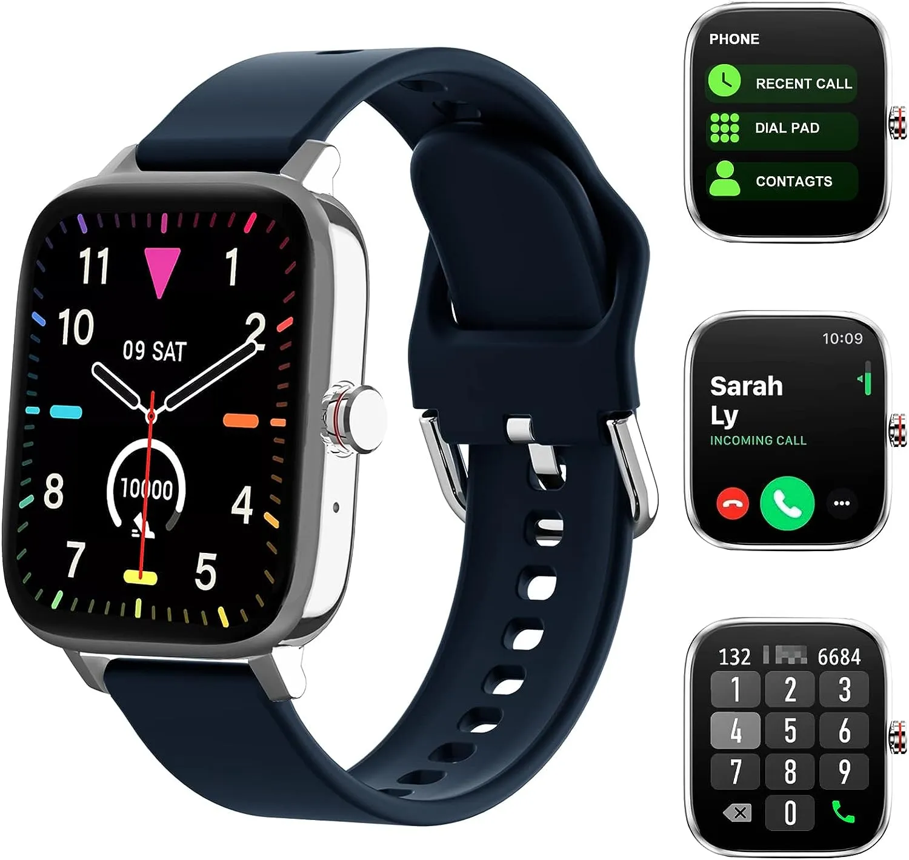
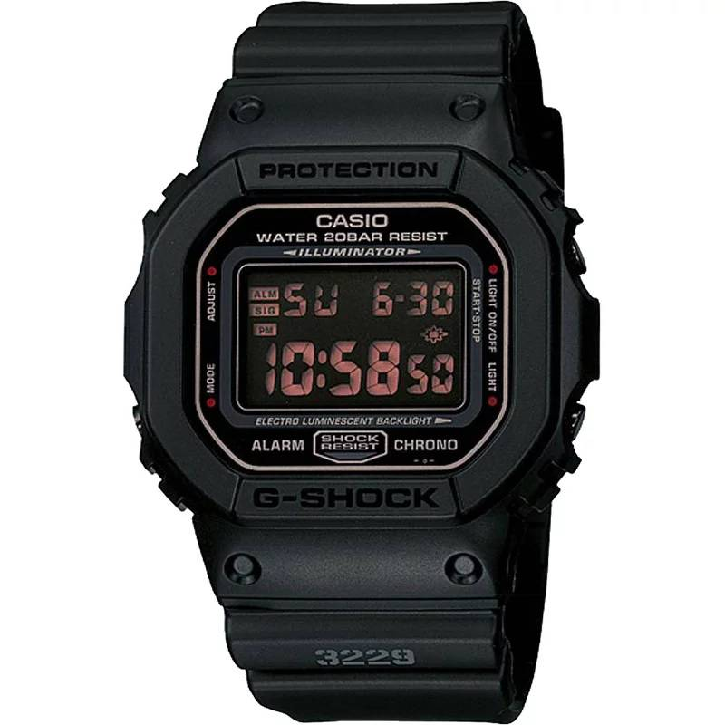
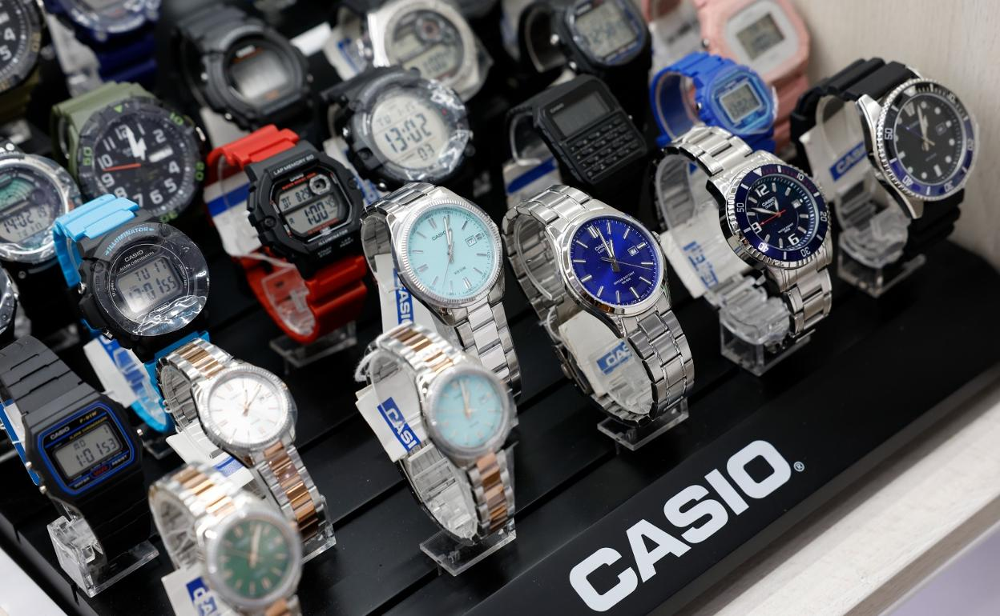
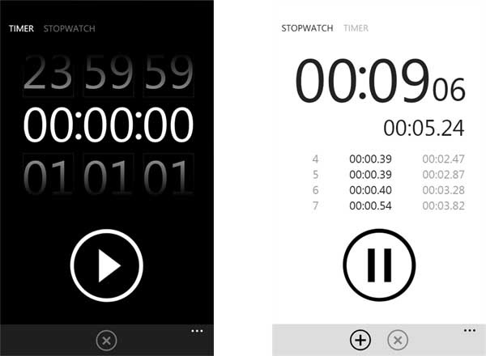
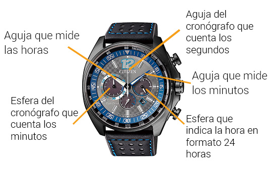

Bienvenidos a mi página web
En esta página encontrarás información sobre nuestros servicios y cómo podemos ayudarte a alcanzar tus objetivos.
¿Cuales son las mejores marcas de relojes?
En Instagram es fácil fijarse en los relojes de primera calidad que llevan las estrellas que se sientan en primera fila en los partidos de los Lakers y que además tienen su propia marca de tequila, pero no te desesperes si tu a presupuesto le faltan ceros. De hecho, nunca ha habido una oferta tan amplia y con precios de entrada tan asequibles, y ello se debe a que existen docenas de marcas consolidadas de relojes con excelente relación calidad-precio y de nuevos nombres que se están esforzando mucho por ganarse un lugar en tu muñeca. Ya busques tu primer reloj o tu decimocuarto, estas marcas ofrecen una calidad excelente a precios asequibles.
¿Cual es el reloj mas vendido?
Las marcas de relojes más vendidas, por volumen.Aunque la asequibilidad se ha vuelto un factor de peso en la industria relojera, eso no ha impedido a Rolex conseguir con el primer lugar en el ranking de las marcas de relojes más vendidas.
¿Que son los relojes Casio?
Son relojes especialmente resistentes y bien fabricados que aguantan todo lo que te puedas imaginar. Un reloj para toda la vida, en muchas ocasiones lleno de sensores (barómetro, altímetro, temperatura, brújula). Perfectos para el más aventurero y perfectos como reloj resistente para trabajar.
 Precios de relojes
De hecho, hay veces que se complica más de lo que debería… Especialmente si buscas una buena relación calidad-precio. Por eso, si quieres invertir en un reloj que dure y tenga un diseño atractivo, es importante buscar marcas que ofrezcan calidad a un precio razonable.
¿Cuál es la diferencia entre un cronógrafo y un cronómetro?
Un cronógrafo tiene una función para medir el tiempo, un cronómetro es un reloj con un certificado de precisión. Un cronógrafo puede ser cronómetro. -Max Bonfigli, directivo de Ulysse Nardin.
¿Qué es el tourbillon y por qué es tan importante en un guardatiempos?
El Tourbillon le agrega precisión compensando los efectos de la gravedad en los movimientos mecánicos, adicionalmente está relacionada con demostrar la alta capacidad técnica de la firma que tiene en sus colecciones esta complicación. –Rafael Arroyo, Country Manager Jaeger-LeCoultre.
¿Qué consideraciones debo tomar en cuenta antes de comprar un reloj?
Debes hacerte cuatro preguntas esenciales que debes cuestionarte antes de realizar tu compra: ¿Qué modelo o marca te dará la mejor inversión? ¿Cuál es tu presupuesto? ¿Qué tipo de pieza deseas –deportiva, clásica o trendy-? ¿Quieres el reloj que todos tienen o uno más exclusivo?- Max Bonfigli, directivo de Ulysse Nardin.
¿Por qué se devalúa un reloj?
El valor de una pieza de relojería puede depender de varios factores tales como los materiales, las cantidades producidas, la demanda, las complicaciones, la casa relojera que lo produce entre otros. Es una ciencia saber escoger el reloj indicado, siendo que algunos se pueden devaluar pero otros pueden sobrepasar por mucho su valor original
¿Para qué sirven los relojes pequeños dentro del reloj?
Los relojes pequeños o mini esferas dentro de la esfera, no son minirelojes. Aportan funcionalidades extra. Si se trata de un reloj con cronógrafo tal y como veíamos en el punto anterior, las subesferas controlan las horas, minutos y segundos.
¿Para qué sirven los cronógrafos de los relojes?
El cronógrafo de un reloj sirve básicamente para medir el tiempo. Es decir, controla el tiempo transcurrido durante un intervalo determinado. Muchos de ellos cuentan además con medidor de velocidades por lo que es una función bastante útil.